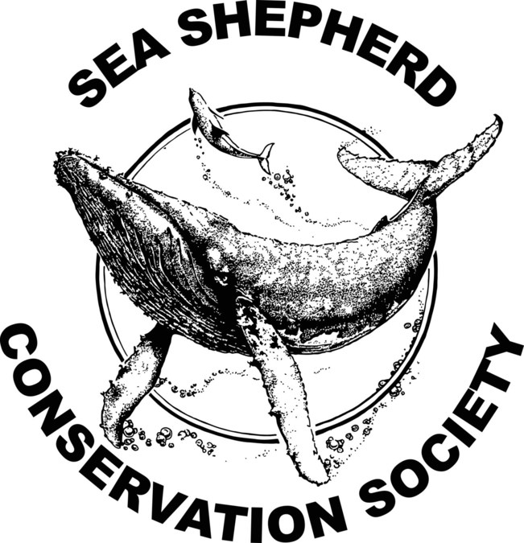

Ayúdanos
Como vimos anteriormente su extinción es mayormente nuestra culpa por eso en este apartado te invito a que te informes y puedas apoyar a diferentes asociaciones que protegen a los animales
Conservación Internacional
Wildlife Conservation Society
International Rhino Foundation
African Wildlife Foundation
Defenders of Wildlife
World Wide Fund for Nature
Turtle Conservancy
Sea Shepherd Conservation Society
Al darle click a las siguientes imagenes te rediccionara a las web oficial de las respectivas organizaciones para poder apoyar o informarte mejor.

World Wild Life
